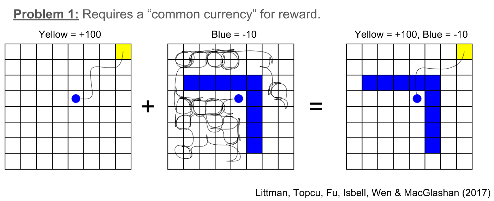
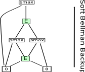

<!DOCTYPE html>
<html>
<head>
<title>NSF CPS PI Meeting</title>
<meta charset='utf-8'>
<meta content='BDD / BAIR Poster Spring 2021.' name='description'>
<link href='https://cdn.jsdelivr.net/npm/katex@0.13.0/dist/katex.min.css' rel='stylesheet'>
<link href='poster.css' rel='stylesheet' type='text/css'>
<script defer src='https://cdn.jsdelivr.net/npm/katex@0.13.0/dist/katex.min.js'></script>
<script defer onload='renderMathInElement(document.body);' src='https://cdn.jsdelivr.net/npm/katex@0.13.0/dist/contrib/auto-render.min.js'></script>
</head>
</html>
<body>
<header>

<div id='title'>
<h1>Specifications from demonstrations; A Maximum Entropy Approach</h1>
<div>
<ol>
<li><strong>Marcell Vazquez-Chanlatte</strong></li>
<li>Sanjit A. Seshia</li>
</ol>
</div>
</div>
<div id='nsf-code'>
<p>
NSF Grant </br> #1545126
</p>
</div>
<div id='qr-codes'>
<figure>

<figcaption>CAV 20'.</figcaption>
</figure>
</div>
</header>
<main>
<section id='motivation'>
<h1>What was the agent trying to do?</h1>
<figure>

<ul>
<li><strong>Q: </strong>Did the agent intend to touch the <span class="outlined-text red">red</span> tile?</li>
</ul>
</figure>
</section>
<section id='problem'>
<h1>Problem Statement</h1>
<blockquote>
Given unlabeled demonstrations, learn a formal
specification that "explains" the teachers
behavior.
</blockquote>
</section>
<section>
<h1>Why not Rewards?</h1>

</section>
<section id='contributions'>
<h1>Contributions</h1>
<ol>
<li>
Robustly learn trace properties from
<strong>unlabeled</strong> demonstrations in Markov Decision
Processes.
</li>
<li>
Symbolic approach for efficently representing Markov Decision Processes
as <strong>Binary Decision Diagrams</strong>.
</li>
</ol>
</section>
<section id='mdps'>
<h1>Symbolic Maximum Causal Entropy Likelihood Estimatation</h1>
<p>
<strong>Key Observation:</strong> Can think of soft constraint
as binary reward.
</p>
$$r_\lambda(\xi) \triangleq \lambda \cdot 1[\xi \in \varphi]$$
<ul>
<li>
By adding history to state space, can reduce to
Maximum Causal Entropy Inverse Reinforcement Learning.
</li>
<li>
<strong>Problem:</strong> Potential combinatorial explosion.
</li>
<li>
<strong>Solution:</strong> Encode MDP as a Binary Decision
Diagram.
</li>
</ul>
<ol>
<li>
Write the <strong>composition</strong> of the dynamics and
property as a circuit with access to biased
coins.
<figure>

</figure>
</li>
<li>
<strong>Idea:</strong> Symbolically encode MDP as a Binary Decision Diagram:
<figure id='bdds'>


</figure>
<strong>Conservative size bound:</strong>
$$O(|\text{horizon}|\cdot |S/\varphi|\cdot |\text{Actions}|\log(|\text{Actions}|))$$
</li>
<li>
We show you can efficiently compute maximum causal entropy
policy on compressed MDP.
</li>
</ol>
<p>
<strong>Application:</strong> Used to learn temporal logic constraint
from <strong>unlabeled</strong> demonstrations, e.g.,
</p>
<p id='spec-example'>
φ = "Avoid Lava, eventually recharge, and don't recharge while wet."
</p>
</section>
<section>
<h1>Experiment: Learn rules given 6 <i>unlabeled</i> demos.</h1>
<div id='demos'>
<figure>

</figure>
<div>
<h3>Dynamics</h3>
<ul id='dynamics'>
<li>Actions = {↑, ↓, ←, →}.</li>
<li>Probability  \(\frac{1}{32}\)  to slip and move ←.</li>
</ul>
<h3>Rules</h3>
<ol id='rules'>
<li>Go to and stay at the <span class="outlined-text yellow" >yellow</span> tile.</li>
<li>Avoid <span class="outlined-text red">red</span> tiles.</li>
<li>If you enter a <span class="outlined-text blue">blue</span>, touch a <span class="outlined-text brown">brown</span> tile <strong>before</strong> recharging.</li>
</ol>
</div>
</div>
<table> <tbody> <tr class="odd"> <td>Spec</td> <td>Policy Size</td> <td>ROBDD</td> <td>Relative Log Likelihood</td> </tr> <tr class="even"> <td></td> <td>(#nodes)</td> <td>build time</td> <td>(Compared to True)</td> </tr> <tr class="odd"> <td>true</td> <td>1</td> <td>0.48s</td> <td>0</td>  <tr class="even"> <td><span class="math inline"><em>φ</em><sub>1</sub>&nbsp;=&nbsp;rule 1</span></td> <td>1628</td> <td>1.2s</td> <td>5</td> </tr> </tr> <tr class="odd"> <td><span class="math inline"><em>φ</em><sub>2</sub>&nbsp;=&nbsp;rule 2</span></td> <td>1797</td> <td>1.5s</td> <td>-22</td> </tr> <tr class="even"> <td><span class="math inline"><em>φ</em><sub>3</sub>&nbsp;=&nbsp;rule 3</span></td> <td>750</td> <td>1.6s</td> <td>-10</td> </tr> <tr class="odd"> <td><span class="math inline"><em>φ</em><sub>4</sub> = <em>φ</em><sub>1</sub> ∧ <em>φ</em><sub>2</sub></span></td> <td>523</td> <td>1.9s</td> <td>4</td> </tr> <tr class="even"> <td><span class="math inline"><em>φ</em><sub>5</sub> = <em>φ</em><sub>1</sub> ∧ <em>φ</em><sub>3</sub></span></td> <td>1913</td> <td>1.5s</td> <td>-2</td> </tr> <tr class="odd"> <td><span class="math inline"><em>φ</em><sub>6</sub> = <em>φ</em><sub>2</sub> ∧ <em>φ</em><sub>3</sub></span></td> <td>1842</td> <td>2s</td> <td>15</td> </tr> <tr class="even"> <td><span class="math inline"><em>φ</em><sub>⋆</sub> = <em>φ</em><sub>1</sub> ∧ <em>φ</em><sub>2</sub> ∧ <em>φ</em><sub>3</sub></span></td> <td>577</td> <td>1.6</td> <td>27</td> </tr></tbody> </table>
<p><strong>Key observation:</strong> \(\varphi_*\) more likely than consistent specifications.</p>
</section>
<section>
<h1>Future Work</h1>
<ol>
<li>Teaching through demonstrations.</li>
<li>Inference in continuous domains.</li>
<li>Data driven concept classes - Natural Language Processing, Sampling consistent automata, etc.</li>
<li>Estimating Membership Queries: Is a given behavior is ok?</li>
</ol>
</section>
</main>
<footer></footer>
</body>
